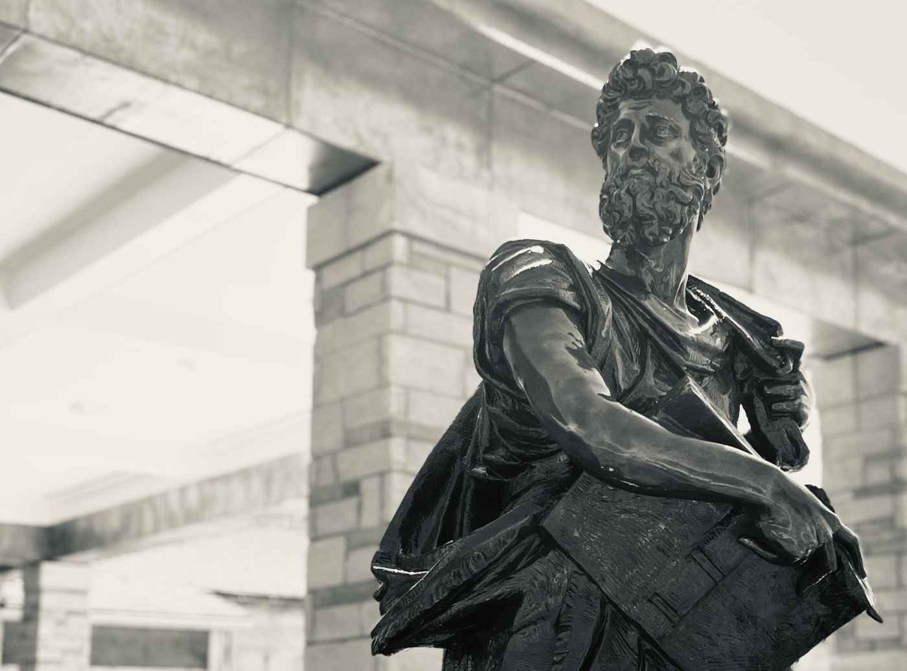

About us
It started with a parish priest and a simple idea.
If you’ve ever enjoyed one of our Lenten fish fries, you’ve already seen the Knights at work.
In 1882, a young parish priest in New Haven, Connecticut, Fr. Michael McGivney, saw families struggling when a father died or couldn’t work. He gathered Catholic men to look out for one another and to grow stronger in faith together. That was the first Knights of Columbus council.
Today he is Blessed Michael McGivney, and the idea still holds. Councils like ours now serve parishes around the world, from big cities to small towns.
Four words guide every council: charity, unity, fraternity and patriotism. In plain terms, help people, stand together, be good friends, and love our country.
“I was busy with a young family and a hectic job, but I wanted to give back to St. Luke and make friends beyond kids’ sports and work. I found a welcoming group, and the involvement was fun, rewarding, and at my own pace. It has also challenged me to grow. Now I find myself chatting with my brother Knights after Mass and at parish events.”
Mike Sale, Knight for 17 years
Our council
St. Luke Council #14895
We were chartered in 2009 and today have about 160 members of all ages, all part of the St. Luke parish family in north-central Indianapolis. We pray together, enjoy each other’s company, and look for ways to serve the parish and our neighbors.
In 2023 we dedicated the Blessed Fr. Michael McGivney Room at St. Luke.
Close to our hearts
Two causes we return to every year
Special Olympics Indiana
We give financial support, help get ready for competitions, and serve as officials on event days.
Gibault Children’s Services
Indiana Knights founded Gibault in 1921 as a home for troubled boys. Today it serves boys and girls and has helped more than 10,000 children and their families. We support it financially and encourage members to volunteer.
Through the year
A year with the Knights
- Lent
- Fish fries and our 40 Cans for Lent food drive.
- Spring
- The Bike Rodeo, where we check kids’ bikes and teach riding skills.
- Fall
- The St. Luke Fall Festival food booth.
- Christmas
- Keep Christ in Christmas cards, and Coats for Kids.
- All year
- Pancake breakfasts, blood drives, and helping wherever the parish needs us.
Our officers
Who to talk to
- Grand Knight
- [Name] · grandknight@kofc14895.org
- Deputy Grand Knight
- [Name]
- Membership Director
- [Name] · membership@kofc14895.org
- Financial Secretary
- [Name] · financialsec@kofc14895.org
- Chaplain
- [Name]
There’s a place for you here.
Practicing Catholic men 18 and older are welcome. No pressure, no commitment.